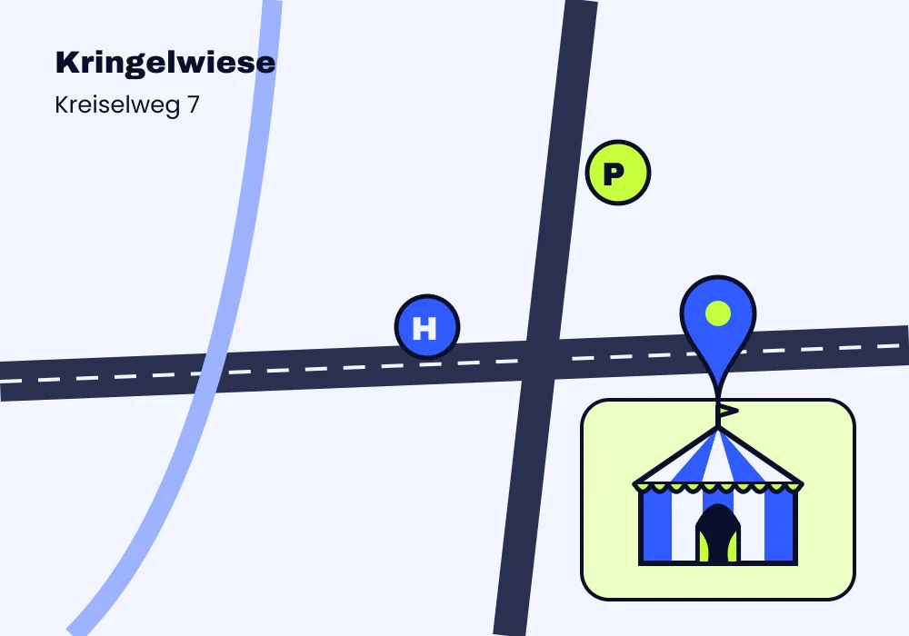

Infos für euren Besuch
Hier findet ihr alles, was ihr vor dem Zirkusbesuch wissen solltet: den Weg zum Zelt, Antworten auf häufige Fragen, das Impressum und woher unsere Bilder kommen.

Anfahrt
Zirkus Zickzack
Kringelwiese, Kreiselweg 7
22041 Hamburg-Wandsbek
Mit Bus und Bahn
Mit der U-Bahn bis „Kreiselplatz“, dann mit dem Bus 77 bis „Kringelwiese“. Von dort folgt ihr den gelbgrünen Pfeilen auf dem Boden.
Mit dem Fahrrad
Direkt neben dem Zelt gibt es 80 Fahrradbügel und Platz für Lastenräder.
Mit dem Auto
Der Parkplatz am Kreiselweg hat 60 Plätze und ist am Wochenende schnell voll. Kommt am besten mit Bus, Bahn oder Rad.
Häufige Fragen
Ab welchem Alter ist die Show geeignet?
Die Show ist für Kinder von 6 bis 10 Jahren gemacht. Jüngere Kinder dürfen mitkommen, wenn sie 90 Minuten mit Pause gut sitzen können. Es gibt keine lauten Knalle und keine dunklen Momente.
Gibt es echte Tiere im Zirkus?
Nein. Bei uns treten nur Menschen auf – und Robbe Rolf, eine große Puppe aus Schaumstoff. Zwei Puppenspieler:innen bewegen sie von innen.
Wie lange dauert eine Vorstellung?
Die Show dauert 90 Minuten, inklusive 20 Minuten Pause. Danach könnt ihr noch 30 Minuten beim Mitmach-Workshop bleiben.
Ist das Zelt barrierefrei?
Ja. Der Weg zum Zelt ist gepflastert und ohne Stufen. Es gibt Rollstuhlplätze in der ersten Reihe und eine barrierefreie Toilette.
Dürfen wir fotografieren?
Während der Show bitten wir um Fotos ohne Blitz, damit die Artist:innen nicht geblendet werden. Beim Workshop dürft ihr so viele Fotos machen, wie ihr möchtet.
Was passiert bei Regen?
Die Vorstellung findet im Zelt statt, Regen ist also kein Problem. Nur bei Sturm müssen wir absagen. Dann bekommt ihr euer Geld zurück.
Darf mein Kind beim Mitmachen in die Manege?
Ja, wenn es möchte. Die Artist:innen fragen vorher und niemand wird überredet. Eltern dürfen gern mitkommen.
Impressum
Studienprojekt der Kunstschule Wandsbek, keine echte Veranstaltung.
Diese Website ist eine Übungsarbeit im Kurs Webdesign (Aufgabe 3: Kulturevent-Website). Der Zirkus Zickzack, alle Personen, die Adresse Kreiselweg 7 und alle Termine sind erfunden. Es werden keine Tickets verkauft und keine Daten gespeichert.
Verantwortlich für den Inhalt: Schüler:in der Kunstschule Wandsbek, Kurs Webdesign 2026.
Bildnachweis
Alle Bilder, Icons und das Logo sind eigene Illustrationen für dieses Projekt. Sie wurden mit KI erstellt: Claude (Anthropic) hat die Zeichnungen als SVG-Code geschrieben. Die Rasterbilder wurden daraus mit rsvg-convert und Python (Pillow) als WebP, JPEG, PNG und GIF gespeichert.
- logo.svg, logo-hell.svg – Logo mit Zelt und Schriftzug
- favicon.svg, favicon-32.png, apple-touch-icon.png – Favicon und Symbol für den Home-Bildschirm
- icon-uhr.svg, icon-ort.svg, icon-stern.svg, icon-ticket.svg, icon-zelt.svg, deko-kringel.svg – Icons und Deko-Linie
- hero-zelt.webp – Zirkuszelt mit Robbe (Startseite)
- clown-kiki.webp, robbe-rolf.png, akrobatin-trapez.webp, jongleur-jonas.jpg – Figuren der Show
- familien-publikum.jpg – Publikum vor der Manege
- jonglier-baelle.gif – Animation mit Jonglierbällen
- popcorn.png, mitmach-workshop.webp – Popcorn und Workshop (Programm)
- zirkuswagen-1987.jpg, zora-zickzack.webp – Zirkuswagen und Porträt (Geschichte)
- anfahrt-karte.webp – Gezeichnete Anfahrtskarte
- verloren.png – Robbe ohne Ball (Fehlerseite)
- og-bild.jpg – Vorschaubild beim Teilen
Schriften
„Archivo Black“ (Omnibus-Type) und „Poppins“ (Indian Type Foundry), beide unter der SIL Open Font License. Die Schriftdateien liegen im eigenen Ordner, es wird nichts von fremden Servern geladen.